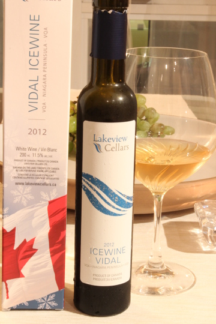

借りてる家が売りに出された時～その２～
結果からいうと、部屋は売れた。市場にでてから2ヶ月半ほど経っていた。
それまで、自分の部屋にいて落ち着かないことこのうえなかった。連日下見のアポが入り、下見に来る人達によってクローゼットは開けられたり、プライバシーもない。デリケートな衣類や下着など乾燥機にかけたくないものも浴室にも干しておけない。そして一番困るのは時間通りにこないこと。
さて、今回私が関心を持ったのは物件を探しているひとではなく、そのエージェント。いろいろなエージェントがきた。軽く２０人以上は会ったとおもう。なかには態度が大きく、テナントである私になんのリスペクトも示さないひともいた。しかし、前回書いたエージェントとは別に、雰囲気がよく、私にも敬意を払った態度をとれる、あ、このひとは他のひととは違う、と感じさせるひともいて、名刺をチェックしてみると個人的にアワードをいくつもとっているセールスマンとして優秀なひとだった。ちなみに先に書いた態度の大きいひとはメディアにも露出しているようだが、親の七光り的な要素が大きいということが後でわかり妙に納得。
そして買い手のひとたちはというと、このスペースはここに机をおいてオフィスとして使えるね。とか、お父さんがきたときにはここにソファベッドをおけるかしら。とか、あきらかに投資目的で購入するとはおもえない雰囲気の人たちが大半。あの、私達あと１年半以上リースがあるんですけど、このひと達わかっているのかしら、大丈夫なのかしら、と不安になってくる。
そして、その不安的中。
ある朝のこと、いきなり大家のＣちゃんから電話があり、メールを送ったから至急書類にサインするように言われた。
それまでの３週間ほどは下見にくるひとがぱったりといなくなっておかしいな、とおもっていた矢先のことで、実はオファーがあり、さらに契約がすすめられていたのだ。
その一枚の書類は、Acknowledgementと題され、宛先は新しい大家で、私とＪ次郎のサインが必要だった。その書類を２４時間以内に提出しないと、オファーを逃してしまうとのこと。
内容は、私達はテナントとして2013年○月○日からここに住んでいます、とか、今現在の大家に関してクレームはありません、とか、デポジットについての金額などが明記されている。
新しい大家側の弁護士が作成したとのことだったが、私とＪ次郎の名前のスペルがひどく間違ってる。
ここで、デポジットが新しいオーナーに引き継がれることを初めて知ったのであるが、問題なのはそのデポジットが大家の所有する家具に対してということ。デポジットの金額は５００ドル。
入居時に、デポジットをとるのなら家具を使いたくない、ということを主張したのだが、大家にしてみても他に保管場所がない、ということで、ベッドやソファなどの大型の家具は残しておくことに渋々同意したのだ。その他の中型の家具にについては、状態や使い勝手の良いものとはいえなかったため、引き取ってもらった（私達が運ばされた）。新品でもない家具が、たまたま私達が住んでいる間に壊れてデポジットから引かれるようなことは絶対に避けたかった。
これは不当なデポジットを返してもらう絶好のチャンスだった。
契約後に知ったことだが、オンタリオ州では、大家は、家具に対してのデポジットはとれないことになっている。これを盾に、その書類にサインするのと引き換えに、デポジットを返してもらいたい、と主張する私たちと、法律だか条例だが知らないが、そんなの知ったこっちゃない、自分の雇った弁護士いわく、不当でもなんでも一度サインしたものは有効である（注！そんなことは決してありません）、と、返したくないＣちゃんとでひと悶着あり、この闘争は朝から夜遅くまで続いた。
Ｃちゃんの言い分は、話しがすすんでいる買い手は投資目的なので、彼らに決まった場合私とＪ次郎はこのまま継続して住めるが、もう1件オファーがあって、その人たちは５００００ドルも金額を上乗せしてしてきた。ただその人たちは投資目的ではなく自分達が住む目的なので、私とＪ次郎が2ヶ月以内に引っ越すことが条件となる。そのようなことは避けたい。だから至急その書類にサインすべき。
あたかもＣちゃんは私とＪ次郎のことを考えているように聞こえるが、私達にはわかっていた。
大家のＣちゃんがそんな良い人ではないことが。
何故なら、その数日前に、Ｃちゃんとその旦那のやり取りメールが、おっちょこちょいなＣちゃんによってＪ次郎に宛てたメールに偶然添付されてきてしまって、そのなかにはＣちゃんの旦那による、Ｆワード満載の私達の悪口が。
内容は、エアコンのこと。７月の猛暑の時期からエアコンが壊れてしまい、新しいのを買う必要があるのだが、なんだかんだいって先延ばししているのだ。高額なので払いたくないのは理解できるが、私達が壊したわけではないし、猛暑をエアコンなしで過ごして迷惑をこうむっているのは私達だというのに。エアコンは、僕らが払う必要ないよね、どうしたら修理したようにみせかけることができるかな、あとプロパティーＴＡＸも払わないでいいよね、とか。メールでは、私のことを無能な日本人妻と呼んでいた。Ｊ次郎のことについても、外見を揶揄することが書かれていた。
私達にしてみれば、薄々そうじゃないかとおもっていたが、やっぱり悪いひとたちだった、しかし、それがわかって本当にラッキー♪といったところでしょうか。
Ｃちゃんは若いのに自分の人生をうまく操縦している感があり、なかでもお金に関する計算高さには感心させられることがある。この部屋を所有するにあたっても、法の目をかいくぐるような、決して正当とはいえないことをして手に入れたのを彼女自身の口から漏らしたことがあった。ロバートキヨサキのベストセラーに、金持ち父さん貧乏父さんというベストセラーがあったが、まだ２０代半ばの彼女は、将来は間違いなく金持ち母さんになることだろう、と確信をもっていえる。
そんな、お金大好きなＣちゃんが、私達のために５００００ドル上乗せされたオファーを辞退するなんてことは絶対にありえないのだ。
この書類にサインするのはあなた達にとって都合の良いことなの、私にとっては何の価値もないのよ、などとＣちゃんは言っているが、彼女が執着すればするほどその一枚の書類が彼女にとってものすごく大事な書類だということが手に取るようにわかる。
そもそも、その買い手が５００００ドルも上乗せして、Ｃちゃんに私達を追い出させることを条件にしたのは何故か。何故、購入後に自分達で私達を追い出さないのか。
それは、できないから。
法律によると、私達は契約したときに２年間のリースを契約したのだが、新しい大家はこのリースを引き継がなければいけない。新しい大家自らが住む目的に限ってはテナントである私達を追い出すことができるが、それはリースが終わった後。しかもその際には然るべき機関に然るべき書類を提出しなければならない。したがって、あとまだ1年半以上あるリースの有効期間内はテナントを追い出すことができないのだ。
Ｃちゃんは粘りに粘った。どうもすでに５００ドルは新しい大家に引き継がれてしまった様子。とはいえ、新しい大家が良識あるひととは限らないので、デポジットは絶対に手元に返してもらいたかった。粘るＣちゃん。シンガポール在住のＣちゃんは、仕事で出張先のマレーシアから何度も長々と国際電話してきて、話し相手であるＪ次郎をなだめすかしたり、妊娠8ヶ月の身重だということこを強調して、疲れたとか言いだしたりした（だったらもう寝ればいいのに）。
しかし、私達は断固譲らず。
この家賃でいいと言ってくれる投資家は少ないの。だからこれはあなたたちにとって絶好の機会なの、と主張するＣちゃん。そもそも、テナントがいたほうが売れやすい、と連呼していたのはＣちゃんなのに。
しまいに、そう、わかった、それは残念だわ、あなた達のためなのに、といい残して電話を切ったＣちゃん。
１０分くらいしたらまたかけてくるよ、という私の予想に反して、自ら電話を切って1分もしないうちにまたかけてきた。そしてやっとデポジットを返すことを約束した。
この時点で夜９時過ぎ。
そして次のお楽しみはＣちゃんの旦那であるＤ君の顔を拝むこと。Ｄ君は私たちの悪口を書いた張本人。私達はそのメールを読んだことはあえて知らせないでいた。理由は、そのほうが総合的に有利だと判断したから。なので、当然Ｄ君も私達が知っているかどうかわからないとはいえ、もし送ってしまったことに気づいているとしたら、Ｄ君にとってこれほどばつの悪いことはない。
最初は、サインしてコンシェルジュに預けておいてくれたらＤ君がとりにいくから、なんて言っていたが、これにも断固拒否したのだ。あくまでもデポジットと引き換えなのは譲れない。
トロントからはるか遠い国にいるＣちゃんにかわって、小切手持参で書類を受け取るべくやってきた近所に住むＤ君。私達と会話している最中、目を合わせなければならないとき、異常なほどに瞬きが激しい。Ｊ次郎は落ち着いているし、私は満面の笑顔だというのに。
デポジットの金額が書かれた小切手と引き換えに、私達にとってはずせない情報がきちんと付け加えられた書類にサインをして渡してあげた。
無能呼ばわりされた日本人妻側のささやかな勝利です。
そしてうれしいことに、これでめでたくＣちゃんとの縁がきれる、というお祝いにアイスワインで祝杯をあげた。
↑ ２０１２年は、ナイアガラオンザレイク地方のワイン作りにおいて、かつてないほどの恵まれた年だったそう。
晴々した気持ちで飲むアイスワインはことさらおいしかった。
ちなみにＤ君、様子からしてたぶん自分のミスに気づいているとおもう。まあ、女の勘にすぎませんけれど。
後日談；
その後新しい大家との契約時には、Cちゃんの嘘の数々が明るみにでた。
ーCちゃんは、私たちには新しい大家に無料で家具を引き渡すと言っていたが、新しい大家には私たちが家具を気に入っていると嘘をつき購入させていた。 ーエアコンが壊れていて使えないのを新しい大家側に内緒にしたかったので、私たちはバカンスでトロントにいないから会えないと嘘をついて、新しい大家と私たちが面会できないようにしていた。
そして、妊娠したのでトロントに移り住むために郊外に広い家を買うというもの嘘だろうとおもわれる。その後２年たって、D君が近所の小さな公園でCちゃんの犬を散歩させていたので。引越しなどしていないだろう。
壊れていたエアコンは、結局Cちゃんが修理を負担することになった。エアコンを取り付けた業者によると、Cちゃんは、業者をどなりつけて中古の品を安く納品させたそう。古いから音がうるさいのには辟易した。